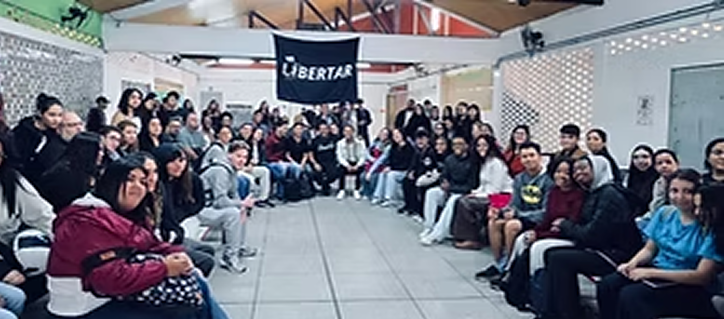
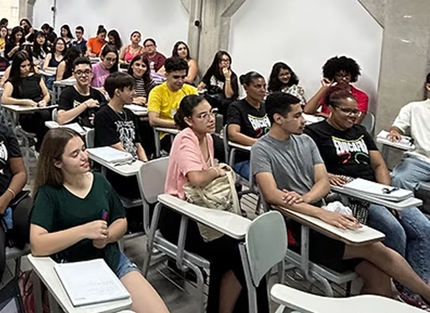

SOBRE NÓS
"O Libertar não promete milagres. Promete trabalho coletivo, dignidade, estudo e esperança organizada. Aqui, ninguém caminha sozinho"
Quem somos?
O Libertar pela Educação é um projeto de educação popular comprometido com a juventude das
periferias e com a construção de caminhos reais de acesso, permanência e pertencimento no
ensino
superior.
Mais do que preparar para provas e vestibulares, o Libertar acredita na
formação integral do estudante. Nosso trabalho une preparação acadêmica, acolhimento,
formação
humana, consciência crítica e fortalecimento do projeto de vida. Aqui, cada jovem é
reconhecido
como sujeito de saber, com história, voz e potência.
Idealização
Nascemos da convicção de que a educação é um direito e uma ferramenta poderosa de
transformação
social. Atuamos para romper barreiras históricas que afastam jovens das universidades,
oferecendo formação gratuita, de qualidade e conectada à realidade dos territórios.
O
Libertar é construído de forma coletiva, com educadores, voluntários e parceiros que
acreditam
na educação como prática de cuidado, resistência e emancipação. Nossos cursos e ações são
pensados para promover não apenas o acesso à universidade, mas também a permanência, a
autonomia
e o protagonismo juvenil.
Futuro
Seguimos em constante organização e profissionalização, fortalecendo nossos processos sem
abrir
mão daquilo que nos move desde o início: o compromisso com a juventude, com o território e
com a
construção de futuros possíveis.
O Libertar pela Educação é mais do que um projeto
educacional.
É uma travessia coletiva, onde aprender é resistir, permanecer e sonhar com dignidade.
Objetivos
Nosso objetivo geral é democratizar o acesso ao ensino superior e à formação
profissional por meio de uma educação popular, gratuita, crítica e de qualidade, promovendo
emancipação, cidadania e justiça social.
Já nossos objetivos
específicos são preparar os estudantes para vestibulares, ENEM e processos
seletivos; fortalecer a autoestima,
o pertencimento e o projeto de vida dos estudantes; desenvolver pensamento crítico,
consciência
social e participação cidadã; combater desigualdades educacionais, raciais e territoriais,
além
de construir vínculos comunitários e redes de apoio.
Polos de atuação
Taboão da Serra - SP
- EE Lúcia de Castro Bueno
- EE Heitor Cavalcante Furtado
Embu das Artes - SP
- Polo em fase de finalização
Gratuidade e acesso
- Curso 100% gratuito
- Material didático gratuito
- Certificado de participação
- Sem taxas de inscrição ou mensalidade
Diferenciais do Libertar
- Educação + cidadania caminham juntas
- Acolhimento real, não assistencialismo
- Professores voluntários comprometidos com a causa
- Formação acadêmica e humana
- Resultados concretos: estudantes aprovados em universidades públicas e privadas com bolsa integral

ESTRUTURA
- Pré-vestibular popular
- Cursos livres e profissionalizantes
- Formação cidadã obrigatória
- Acompanhamento pedagógico e humano
- Atividades culturais, esportivas e comunitárias

FORMAÇÃO COMPLEMENTAR
O Libertar adota a Educação Popular, com inspiração freireana, baseada em:
- Diálogo e escuta ativa
- Valorização da vivência dos estudantes
- Ensino contextualizado à realidade do território
- Construção coletiva do conhecimento
- Educação como prática de liberdade
Aqui, o estudante não é um número: é história, voz e futuro.